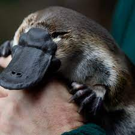
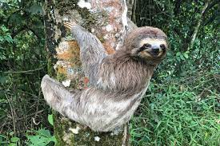
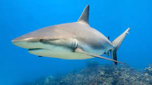
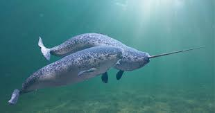
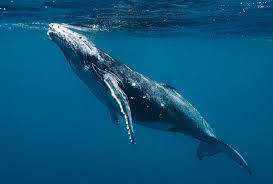
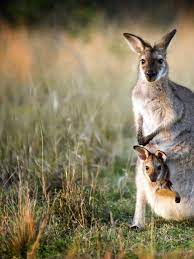
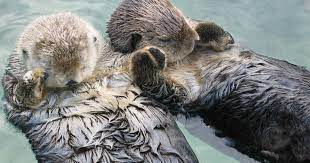
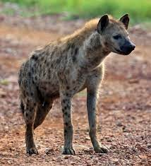

Amazing Fun Facts about Animals
1. Koalas Have Fingerprints

Slow-moving eucalyptus aficionados, koalas are beloved! They live on trees and are native to Australia and are closely related to wombats. That’s right Koalas are not really bears. Koalas also sleep a lot, sometimes up to 18 hours a day. It is also a sad fact that Koalas are endangered species, due to deforestation and loss of habitat. They have no fur on the palms of their hands and fingers and also have fingerprints that are indistinguishable from humans, with the same whirls and loops. Researchers have determined that the marsupials adapted this feature to get a better hold of branches of trees while foraging for food.
2. Platypuses Can Shoot Venom from Their Feet
Platypuses have unusual appearances. They look as if they’re cobbled together from other non-threatening animals, like a duck and a beaver. But in reality, platypuses are feisty! They are found in eastern Australia and are one of the only two egg-laying mammal species in the world. They seem lazy as they sleep for around 14 hours a day, hibernate in their burrow during winter, and sometimes fall prey to snakes, water rats, birds and crocodiles. It is forbidden to keep them as pets in Australia.
3. Sloths Have Olympian-Like Swimming Skills
Sloths are one of the slowest animals on land due to having very low metabolism. They are unique in that respect and fall prey to other predators easily. They do have some natural defense as they have long claws and can lash out when threatened, however, they are generally not aggressive towards humans. They are native to the tropical rainforests in South and Central America, and spend their days hanging upside down from tree branches.
Elephants Can’t Jump

Elephants are amazing animals with many admirable characteristics. They are the largest land-dwelling mammals, have an incredible sense of smell, great memory, social lives that are as complex as humans, and they are nearly immune to cancer. They also have the longest gestation period in mammals which lasts for 645 days, which is almost two years. Elephants have been found to be incredibly intelligent, emotional, empathetic, self-aware, and compassionate species. Although an Elephant can take on any predator and win they are afraid of bees.
5. The Great White Shark Must Keep Swimming to Breathe
In the Pixar movie “Finding Nemo,” Dory sings “Just keep swimming” to keep Marlin from giving up, but fun facts about animals include the one that the great white shark must keep swimming to stay alive. This type of shark must swim quickly with its mouth open for oxygen to get to its gills. This is called “ram ventilation,” and is a technique used by more of the species than just the great white shark. Others include hammerhead sharks, whale sharks, reef sharks, and makos.
6. The Narwhal’s Horn is a Tooth
Narwhals have the ultimate snaggle tooth. The famous tusk or horn that gives them the appearance of being a unicorn of the sea is actually a tooth. It protrudes through the upper lip of male narwhals, and it is how they attract females. Narwhals are at home in the cold waters of the Arctic Circle.
7. Whales Can Put Half of Their Brains to Sleep
Blue whales, the largest mammal on the planet, are so large that a human baby could crawl through one of their major blood vessels, but they are unable to breathe underwater. Periodically, they must surface to breathe. Blue whales are in the list of endangered species as they have been subjected to commercial hunting for ages, now their numbers have dwindled to a mere twenty thousand around the world. They are non-aggressive towards humans and generally live peacefully.
8. Kangaroos Can’t Walk Backwards
Kangaroos are large Australian marsupials capable of hopping great distances, but the structure of their large tails and strong rear feet make it impossible for them to walk backward. The designers of the Australian Coat of Arms used the animal for this reason. It symbolizes that the nation only moves forward.
9. Sea Otters Hold Hands When They Sleep
Sea otters are water-based creatures that live most of their lives in water. They hunt, eat and sleep in waterways. Sea otters hold hands when they fall asleep to avoid floating away from one another in the ocean while they’re resting. They also anchor to a spot by tangling themselves up in seaweed or kelp.
10. Hyenas are More Related to Cats than Dogs
Hyenas are more closely related to cats than dogs even though many people think that they look more like a dog. Technically, the animal is a part of the Feliformia suborder, which is one of the two Carnivora orders, but they are different enough from cats for their own separate classification, which is the Hyaenidae.